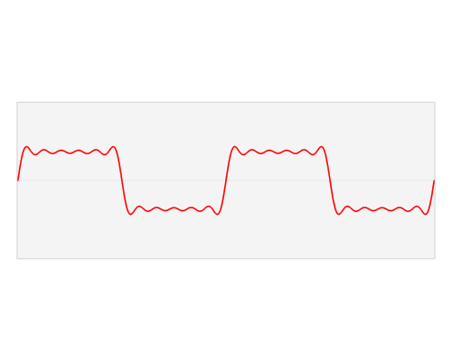

Post of the Month
Visually stunning math concepts which are easy to explain
Since I'm not that good at (as I like to call it) 'die-hard-mathematics', I've always liked concepts like the golden ratio or the dragon curve, which are easy to understand and explain but are mathematically beautiful at the same time. This Killer visualisation of the Fourier Transform was very enlightening for me.
More intriguing information
In mathematics, a Fourier transform (FT) is a mathematical transform that decomposes functions depending on space or time into functions depending on spatial or temporal frequency, such as the expression of a musical chord in terms of the volumes and frequencies of its constituent notes. The term Fourier transform refers to both the frequency domain representation and the mathematical operation that associates the frequency domain representation to a function of space or time. The Fourier transform of a function of time is a complex-valued function of frequency, whose magnitude (absolute value) represents the amount of that frequency present in the original function, and whose argument is the phase offset of the basic sinusoid in that frequency. The Fourier transform is not limited to functions of time, but the domain of the original function is commonly referred to as the time domain. There is also an inverse Fourier transform that mathematically synthesizes the original function from its frequency domain representation, as proven by the Fourier inversion theorem.
TOP COMMENT
You're a bit off. f is the sum of multiple simple waves, all with different frequencies and phase angles. The fourier transform takes a complex wave from a given time period, and gives you the phase angles and frequencies of all of the component waves. f^ is the amplitude of each component wave.
So in conclusion ...
Linear operations performed in one domain (time or frequency) have corresponding operations in the other domain, which are sometimes easier to perform. The operation of differentiation in the time domain corresponds to multiplication by the frequency, so some differential equations are easier to analyze in the frequency domain. Also, convolution in the time domain corresponds to ordinary multiplication in the frequency domain (see Convolution theorem). After performing the desired operations, transformation of the result can be made back to the time domain. Harmonic analysis is the systematic study of the relationship between the frequency and time domains, including the kinds of functions or operations that are "simpler" in one or the other, and has deep connections to many areas of modern mathematics.